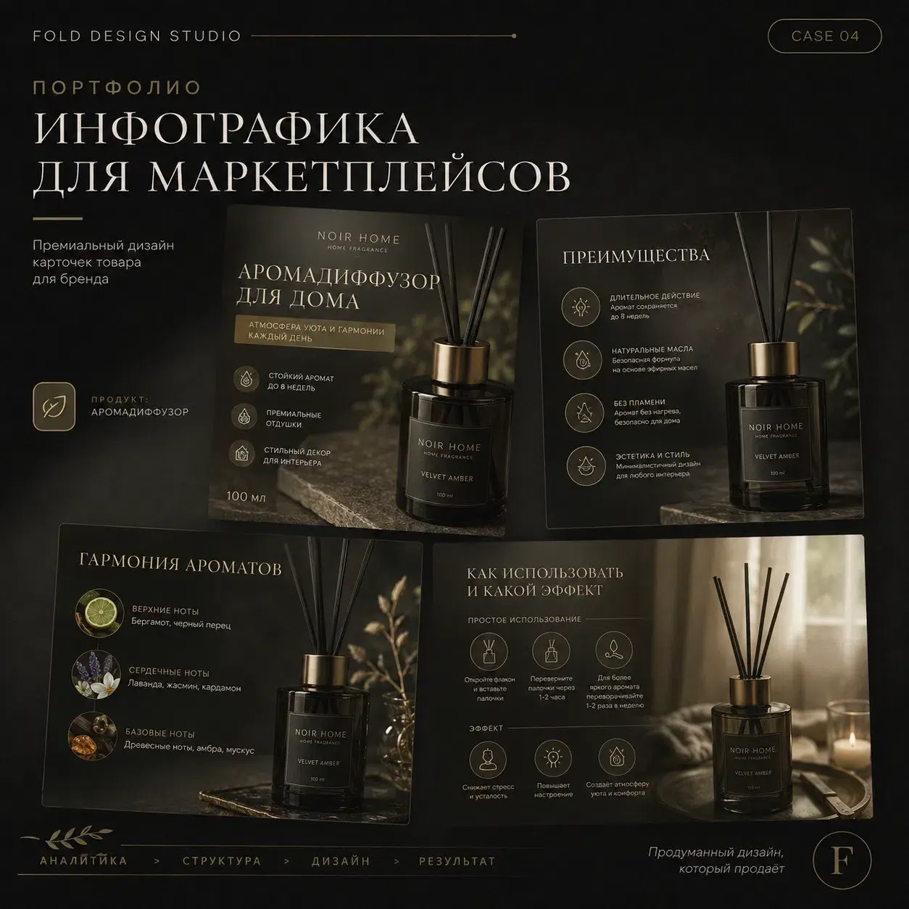
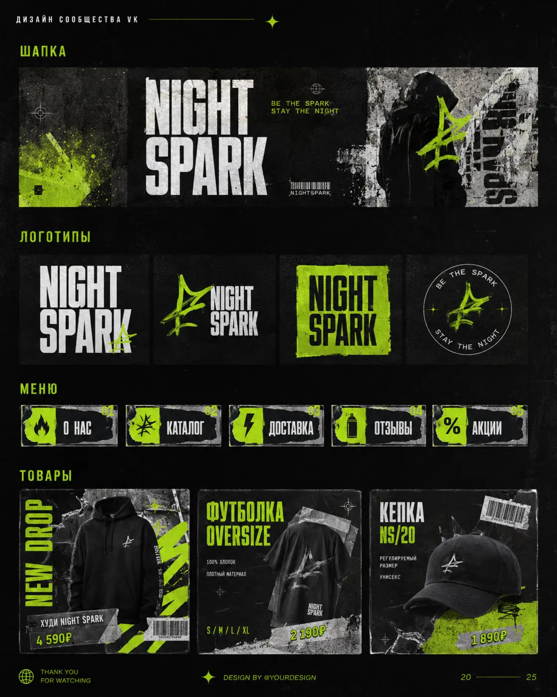
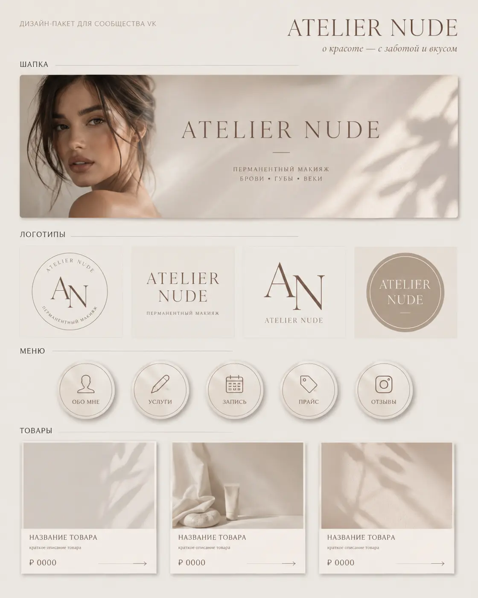
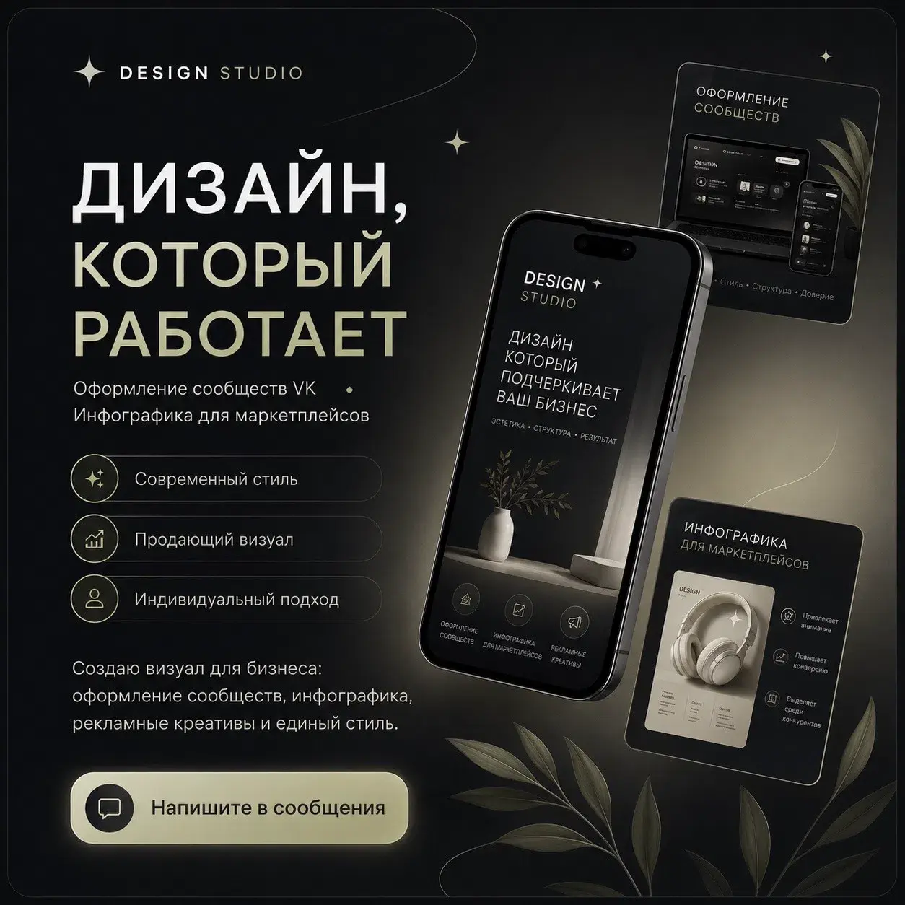
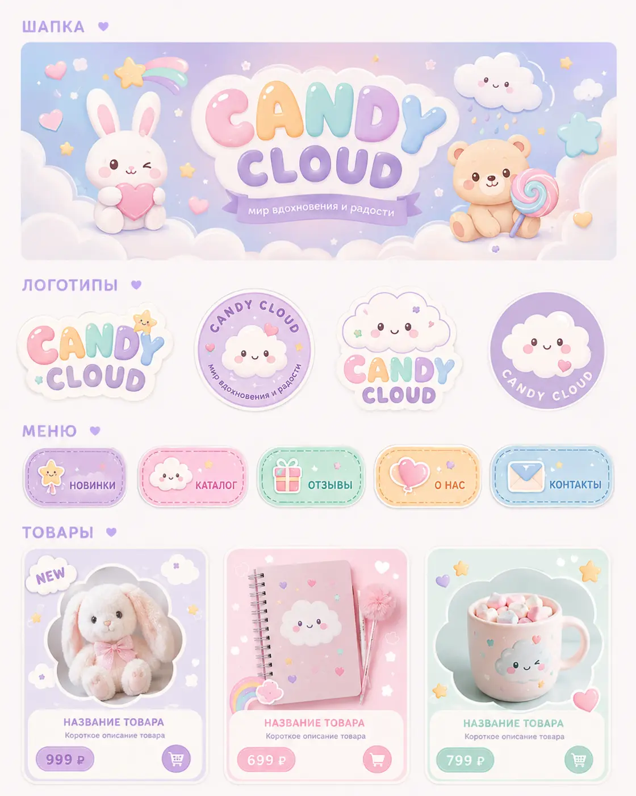
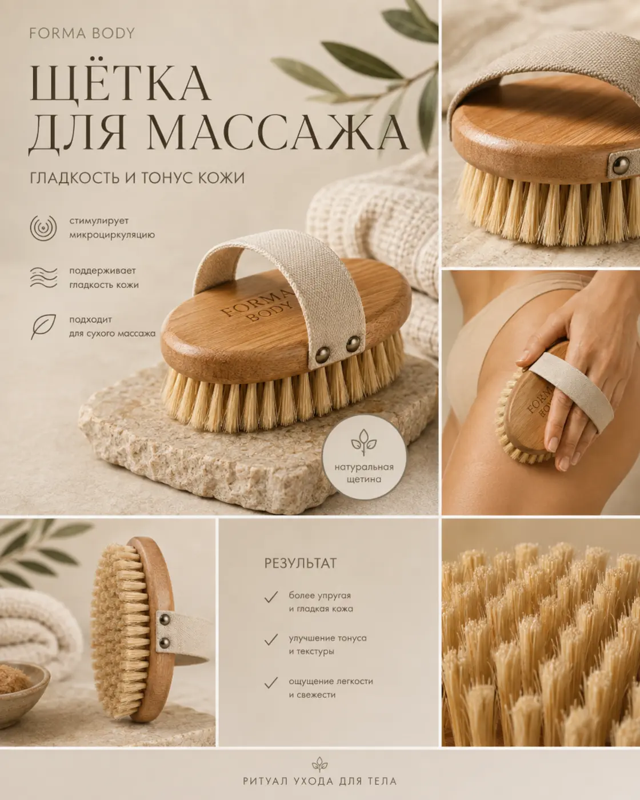
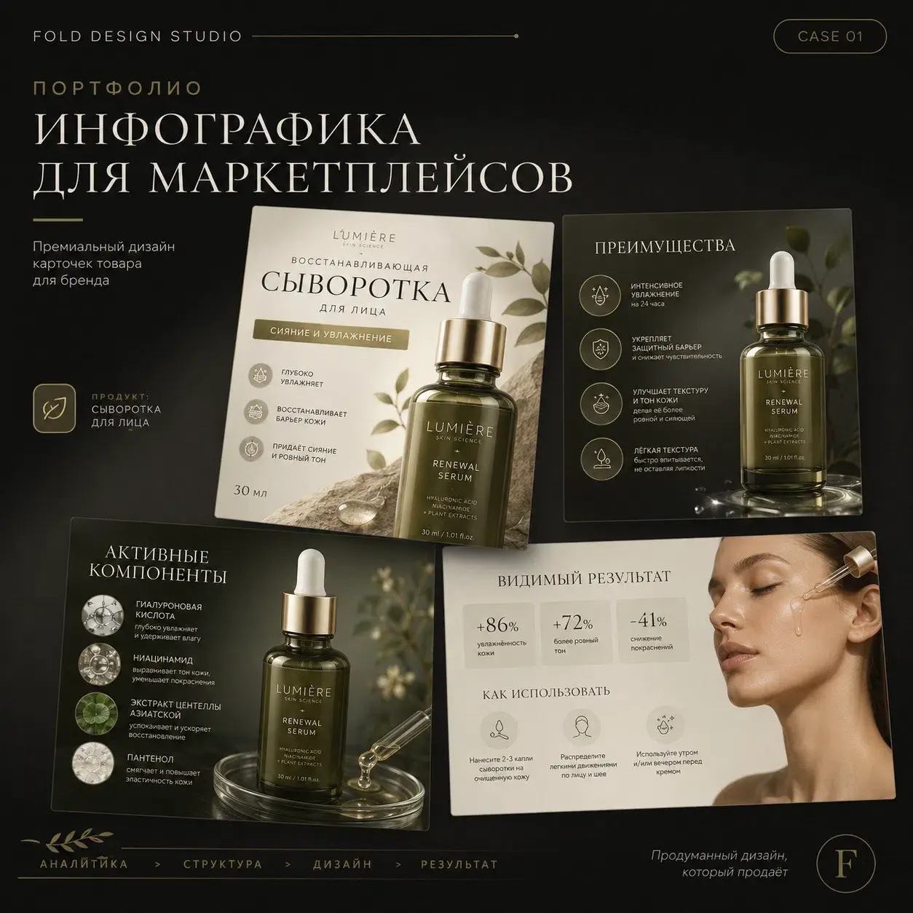
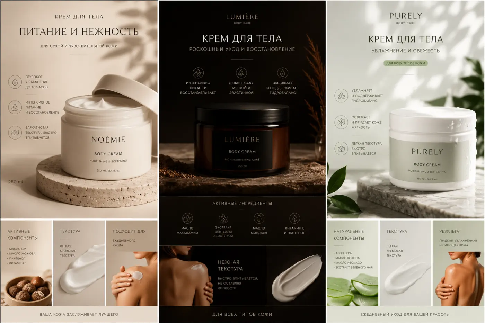
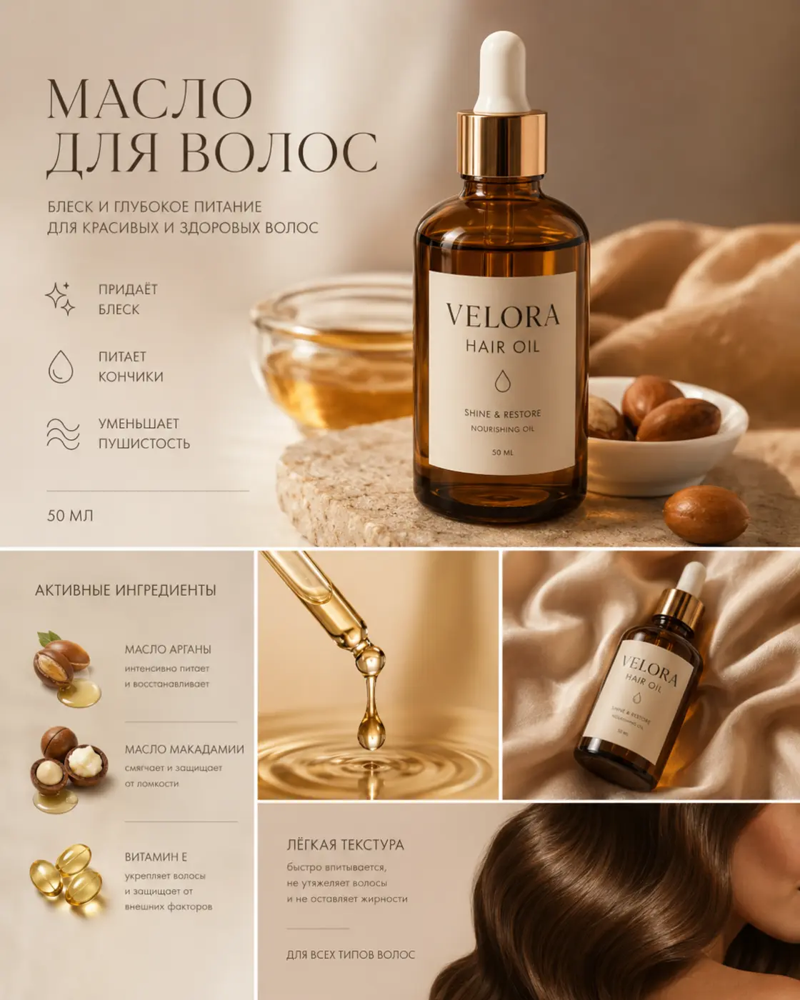
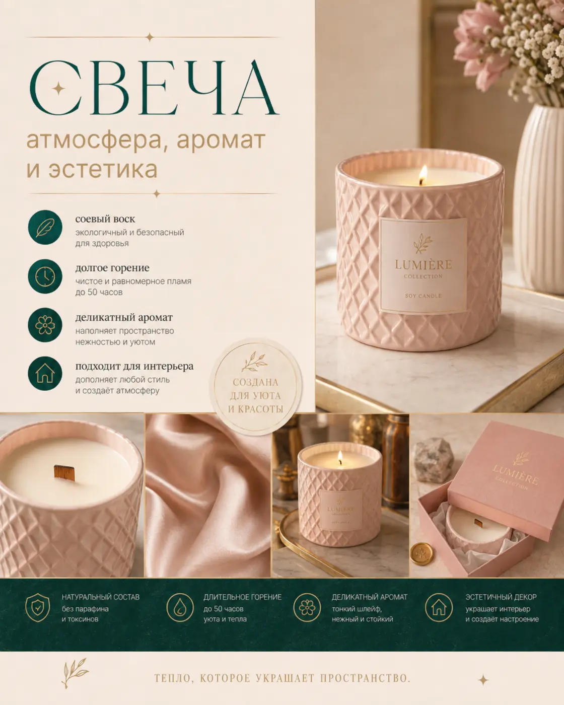

Инфографика
Один слайд для Wildberries или Ozon
от 300 ₽Дизайн для Wildberries, Ozon и бизнеса
Создаю инфографику, оформление сообществ и фирменный визуал под продукт — спокойно, точно и в вашем стиле.

Визуал со смыслом
Продумываю композицию, иерархию и подачу преимуществ. Каждый проект получает собственный характер — от минимализма и нежной эстетики до контрастного гранжа.
Избранные проекты
Инфографика и упаковка сообществ в разных нишах и стилях.









Форматы работы
Финальная сумма зависит от объёма и сложности. Перед началом работы согласуем задачу и стоимость.
Один слайд для Wildberries или Ozon
от 300 ₽20–30 слайдов в едином стиле, стоимость зависит от сложности
2 000–3 500 ₽Обложка, аватар, меню и услуги в едином стиле
3 900 ₽Визуальная основа для нового проекта
от 500 ₽Креатив для услуги, товара или акции
от 1 000 ₽Логотип, палитра и базовая визуальная система
4 900 ₽Как мы работаем
Вы присылаете ссылку или фотографии товара, информацию и примеры, которые нравятся.
Определяем объём, стиль, акценты, стоимость и сроки до начала работы.
Выстраиваю логику слайдов, композицию и визуальную систему под ваш продукт.
После согласования вы получаете готовые материалы для публикации.

О студии
Создаю современный визуал для бизнеса, брендов и социальных сетей. В работе важны индивидуальный подход, соблюдение договорённостей и поддержка после завершения проекта.
Перейти в сообщество VK ↗Есть задача?